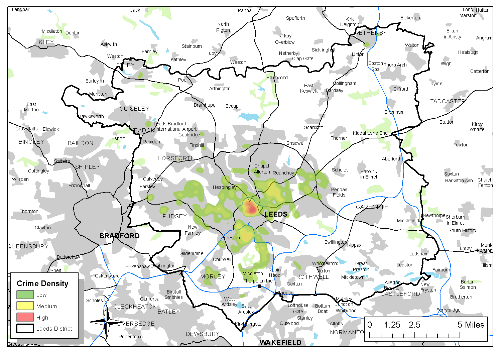
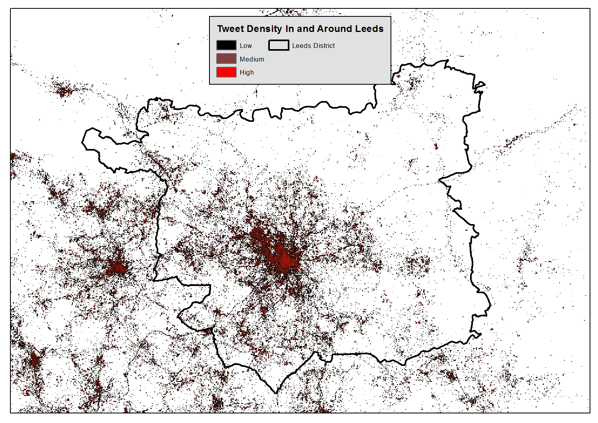

Using Social Media Data to Assess Spatial Crime Hotspots
Presentation to GISRUK 2014
Dr Nick Malleson, School of Geography, University of Leeds
Dr Martin Andresen School of Criminology, Simon Fraser University, BC, Canada
http://nickmalleson.co.uk/
@nickmalleson
http://www.geog.leeds.ac.uk/people/n.malleson
Admin
This presentation is based on the following paper:
Malleson, N and M. Andresen (in press). The impact of using social media data in crime rate calculations: shifting hot spots and changing spatial patterns. Cartography and Geographical Information Society (CaGIS).
The GISRUK abstract is available here:
http://nickmalleson.co.uk/wp-content/uploads/2014/04/gisruk2014_abstract.pdf
These slides are available online:
Outline
Context: the population at risk of crime

Data and the study area
Residential population
'Ambient' population
Crime Clusters
GI*
GAM
Results and Conclusions
Research Questions
Are crime hot spots stable under the application of different population-at-risk measures?
Which areas have the highest crime rates when using both residential (census) and mobile (social media) population at risk data?
Context:
The Population-At-Risk in Crime Analysis
The population at risk is fundamental for crime rate calculations
No consensus on the best population-at-risk measure to use
“a valid rate ... should form a probability statement, and therefore should be based on the risk or target group appropriate for each specific crime category” (Boggs, 1965)
Usually default to residential population
Residential Population

OK for some crime types
E.g. Burglary
But not for many others. E.g.:
Assaults (Boivin 2013)
Robbery (Zhang et al. 2012)
Violent crime (Andresen 2006, 2011)
Why residential?
Data availability and resource constraints
More recent attempts to estimate the ambient population:
Proxies (Boggs, 1965). E.g. car park locations, pavement area, etc.
LandScan data (Andresen et al. 2012). Global estimates of average (24hr) population, resolution ~1km2
Another Solution: Social Media
Surge in volume of contributions to social media
66% of online adults use social media (Smith, 2011)
100 million active Twitter accounts in 2011 (Twitter, 2011)
270,000 tweets per minute produced worldwide in 2012 (TechCrunch, 2012)
Accurate time stamps and (occasionally) spatial location
Combination of text, media, location, etc.
Potentially powerful source of data for urban dynamics
Potential to create targeted population-at-risk measures
Social Media - Limitations
Messiness / Noise
Not gathered using systematic / statistically guided methodology
Omissions are commonplace
No systematic corrections
Generalisability
The digital divide
E.g. higher socioeconomic status groups are over represented in Twitter and Flickr (Li et al., 2013)
Bias
Over-representation of the most prolific users
Or certain activities
Still, potentially lower bias than using the residential population
Data and the Study Area
Leeds
Population 757,655 (in 2012)
Central shopping/leisure/commercial area: high ambient population, low residential population
Violent Crime data
All Police recorded data for 2011
(Only ~40% reporting rate, Flatley, 2013)
Residential population data
Census 2011
Ambient population data
Geo-located Twitter messages from 22 June 2011 to 14 April 2013
N=1,955,655 (after cleaning)
Methods
Aim: highlight high-crime areas using both residential and mobile population at risk estimates.
Two complementary statistics:
Getis-Ord GI* (Getis and Ord 1992; Ord and Getis 1995)
Popular in crime analysis (definition closely matches that of a 'hot spot')
Area based: reveal statistically significant high/low density areas
Geographical Analysis Machine (Openshaw, 1987)
Estimate expected events in overlapping search circles
Identify statistically significant circles
Fuzzy output by varying search radius (200m - 1km)

Conclusions
Residential and ambient population-at-risk lead to very different crime rates
Apparently obvious, but novel.
Ambient population is theoretically and empirically justified, but rarely used
City centre hot spot disappears with ambient population, but some neighbourhoods are consistently high (areas of high deprivation)
Serious limitations: generalisability of Twitter data, the digital divide
But also great optimism, 50 years on from Boggs (1965)
Population tailored to crime category
Temporal disaggregation (day/night, week/weekend)
Finally, population-at-risk measures might catch up with crime analysis methods
"One of the areas that is being most dramatically shaken up by N=all is the social sciences. They have lost their monopoly of making sense of empirical social data, as big data analysis replaces the highly skilled survey specialists of the past. .. When data are collected passively while people do what they normally do anyway, the old biases associated with sampling and questionnaires disappear."
(Mayer-Schonberger and Cukier, 2013)
Thank you
Dr Nick Malleson, School of Geography, University of Leeds
Dr Martin Andresen School of Criminology, Simon Fraser University, BC, Canada
http://nickmalleson.co.uk/
@nickmalleson
Presentation adapted from paper:
Malleson, N and M. Andresen (in press). The impact of using social media data in crime rate calculations: shifting hot spots and changing spatial patterns. Cartography and Geographical Information Society (CaGIS).
Abstract:
http://nickmalleson.co.uk/wp-content/uploads/2014/04/gisruk2014_abstract.pdf
Slides:
References
Andresen, M.A., 2006. “Crime Measures and the Spatial Analysis of Criminal Activity.” British Journal of Criminology 46 (2): 258–285.
Andresen, M.A., 2011. “The Ambient Population and Crime Analysis.” Professional Geographer 63 (2): 193–212.
Andresen, M.A., G.W. Jenion, and A.A. Reid. 2012. “An Evaluation of Ambient Population Estimates for Use in Crime Analysis.” Crime Mapping: A Journal of Research and Practice 4(1): 7–30.
Boivin, R. 2013. On the Use of Crime Rates. Canadian Journal of Criminology and Criminal Justice 55 (2): 263—277.
Boggs, S.L. 1965. “Urban Crime Patterns.” American Sociological Review 30 (6): 899–908.
Flatley, J. 2013. Crime in England and Wales, year ending September 2012. London: Office for National Statistics.
Getis, A., and J.K. Ord. 1992. ÒThe Analysis of Spatial Association by Use of Distance Statistics.Ó Geographical Analysis 24 (3): 189Ð206.
References
Openshaw, S. 1987. ÒAn Automated Geographical Analysis System.Ó Environment and Planning A 19 (4): 431Ð436.
Ord, J.K., and A. Getis. 1995. ÒLocal Spatial Autocorrelation Statistics: Distributional Issues and an Application.Ó Geographical Analysis 27 (4): 286-306.
Li, L., M.F. Goodchild, and B. Xu. (2013). ÒSpatial, Temporal, and Socioeconomic Patterns in the Use of Twitter and Flickr.Ó Cartography and Geographic Information Science 40(2): 61 Ð 77.
Mayer-Schonberger, V., and K. Cukier. 2013. Big Data: A Revolution That Will Transform How We Live, Work and Think. London: John Murray.
Smith, A. 2011. Why Americans use social media. Technical report, Pew Research Centre Available online: http://www.pewinternet.org/Reports/2011/Why-Americans-Use-Social-Media.aspx [Accessed 28 November 2013].
TechCrunch (2012). Analyst: Twitter Passed 500M Users In June 2012. Online: http://techcrunch.com/2012/07/30/analyst-twitter-passed-500m-users-in-june-2012-140m-of-them-in-us-jakarta-biggest-tweeting-city/ [Accessed on 19/1/13].
Twitter (2011) One hundred million voices. Twitter Blog. Online: https://blog.twitter.com/2011/one-hundred-million-voices [accessed Jan 2014]
Zhang, H., G. Suresh, and Y. Qiu. 2012. “Issues in the Aggregation and Spatial Analysis of Neighborhood Crime. Annals of GIS 18 (3): 173–183.